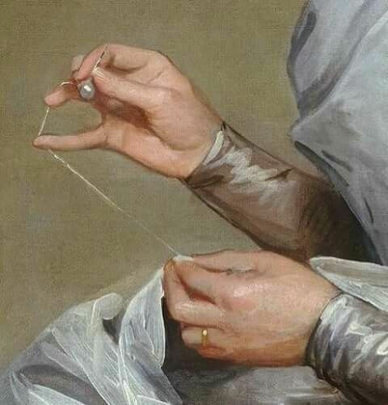

A Place for Things to Live
I have been thinking for some time about keeping a journal. I always wanted somewhere for my thoughts to exist outside of myself and so I decided to create one, which is what you see here.
Read entrycreator of strange and tender things

I have been thinking for some time about keeping a journal. I always wanted somewhere for my thoughts to exist outside of myself and so I decided to create one, which is what you see here.
Read entry